IP 形象
他有一头像星星的黄色短发, 一件草绿色的外套, 和一条明黄色的围巾. 他不会说太多话, 但会认真地比心, 说谢谢, 也会在小事上为自己加油 - 像每一个真实的孩子.
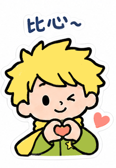
角色设定
头发像星星的男孩
形象是从项目 Logo 里的那颗金色五角星长出来的: 星形短发是星光, 草绿外套是草地, 明黄围巾是围在脖子上的一点暖. 他没有夸张的表情, 也没有尖锐的线条, 只希望孩子第一眼看见他时, 觉得安全.
- 名字
- 小星
- 头发
- 星形金色短发
- 衣着
- 草绿外套 · 明黄围巾
- 记号
- 胸口一颗五角星
- 星光黄
- 嫩芽绿
- 奶油白
- 墨线
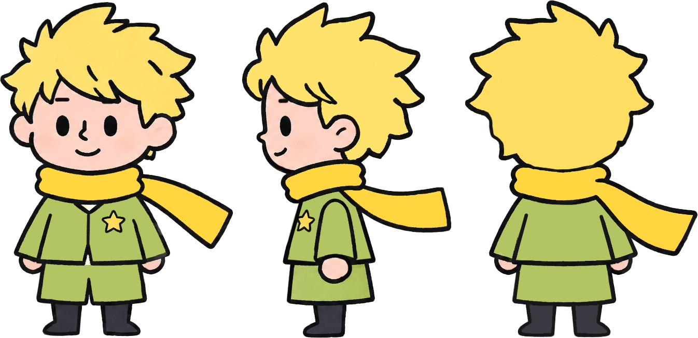
表情包 · 12 枚
十二个表情, 十二种心情
从比心到再见, 这十二枚贴纸可以配海报, 配推文, 也可以放进聊天框. 它们想说的是: 星星的孩子并不是"没有情绪", 只是表达的方式和你不太一样 - 慢一点, 就能听懂.
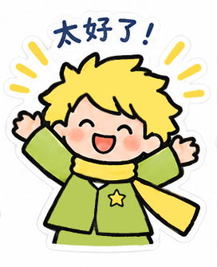
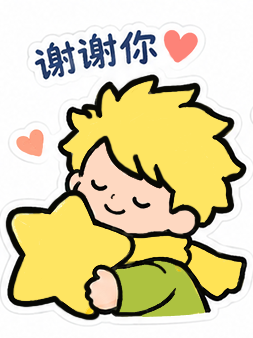
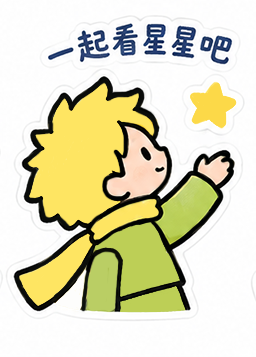
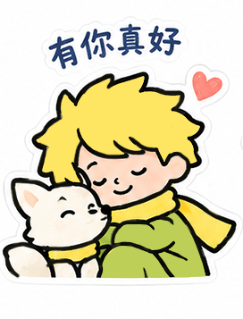
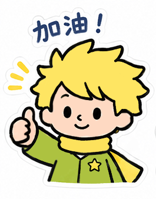
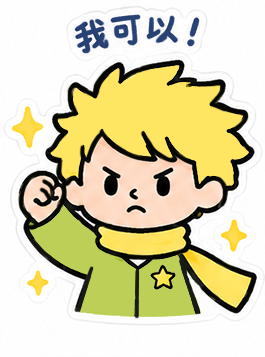
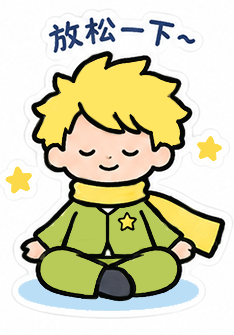
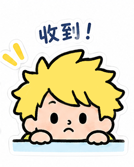
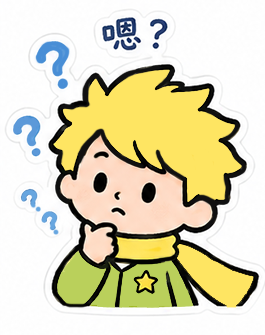
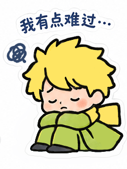
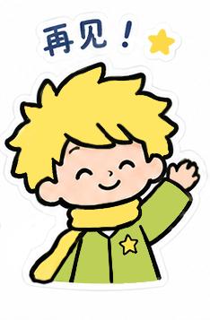